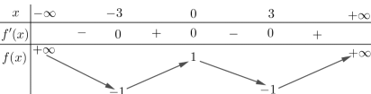
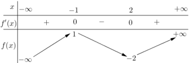
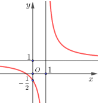
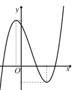
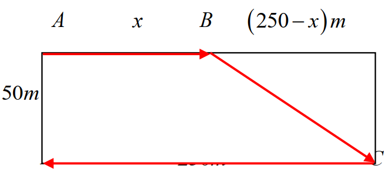

ĐỀ THI TOÁN - ĐỀ SỐ 18 HOT
Phần I: Trắc Nghiệm Nhiều Lựa Chọn
Tóm tắt kiến thức: Cấp số cộng
Trong cấp số cộng, công sai \( d \), số hạng đầu \( u_1 \), tổng \( S_n = \frac{n}{2} (2u_1 + (n-1)d) \).
Câu 1:
Cho cấp số cộng \( (u_n) \) có \( d = -2 \) và \( S_8 = 72 \). Tìm số hạng đầu tiên \( u_1 \).
Chọn đáp án:
Lời giải:
Ta có \( S_8 = 72 \), \( d = -2 \). Công thức tổng cấp số cộng:
\( S_8 = 8u_1 + \frac{8 \cdot 7}{2} \cdot (-2) = 8u_1 - 56 \).
\( 72 = 8u_1 - 56 \Rightarrow 8u_1 = 128 \Rightarrow u_1 = 16 \).
Đáp án: A.
Tóm tắt kiến thức: Giao tuyến của hai mặt phẳng
Giao tuyến của hai mặt phẳng là đường thẳng đi qua hai điểm chung của chúng.
Câu 2:
Cho tứ diện \( ABCD \). Gọi \( G \) là trọng tâm của tam giác \( BCD \). Giao tuyến của mặt phẳng \( ACD \) và \( GAB \) là:
Chọn đáp án:
Lời giải:
Điểm \( A \) là điểm chung thứ nhất giữa hai mặt phẳng \( ACD \) và \( GAB \).
Điểm \( N \), trung điểm của \( CD \), thuộc \( CD \subset ACD \Rightarrow N \in ACD \).
Vì \( G \) là trọng tâm tam giác \( BCD \), đoạn \( BG \) cắt \( CD \) tại \( N \), nên \( N \in BG \subset GAB \Rightarrow N \in GAB \).
Vậy giao tuyến là đường thẳng \( AN \).
Đáp án: B.
Tóm tắt kiến thức: Tứ phân vị
Tứ phân vị thứ ba \( Q_3 \) của mẫu số liệu ghép nhóm được tính: \( Q_3 = a_k + \frac{\frac{3n}{4} - \sum_{i=1}^{k-1} m_i}{m_k} \cdot (a_{k+1} - a_k) \), trong đó \( a_k \) là đầu mút trái của nhóm chứa \( Q_3 \), \( m_k \) là tần số nhóm đó, \( n \) là tổng tần số.
Câu 3:
Thống kê thời gian hoàn thành một bài tập (đơn vị: phút) của một số học sinh, ta có bảng số liệu sau:

| Thời gian (phút) | \([0; 4)\) | \([4; 8)\) | \([8; 12)\) | \([12; 16)\) | \([16; 20)\) |
|---|---|---|---|---|---|
| Số học sinh | 2 | 4 | 7 | 4 | 3 |
Chọn đáp án:
Lời giải:
Tổng số học sinh: \( n = 2 + 4 + 7 + 4 + 3 = 20 \).
Tứ phân vị thứ ba \( Q_3 = \frac{x_{15} + x_{16}}{2} \), thuộc nhóm \([12; 16)\).
Với \( p = 4 \), \( a_4 = 12 \), \( m_4 = 4 \), \( m_1 + m_2 + m_3 = 2 + 4 + 7 = 13 \), \( a_5 - a_4 = 4 \):
\( Q_3 = 12 + \frac{\frac{3 \cdot 20}{4} - 13}{4} \cdot 4 = 12 + \frac{15 - 13}{4} \cdot 4 = 14 \).
Đáp án: B.
Tóm tắt kiến thức: Tính đơn điệu của hàm số
Hàm số đồng biến trên khoảng mà \( f'(x) \geq 0 \), nghịch biến nếu \( f'(x) \leq 0 \). Bảng biến thiên cho biết dấu của \( f'(x) \).
Câu 4:
Cho hàm số \( f(x) \) có bảng biến thiên như sau:

Hàm số đã cho đồng biến trên khoảng nào dưới đây?
Chọn đáp án:
Lời giải:
Từ bảng biến thiên, \( f'(x) \geq 0 \) trên các khoảng \( (-3; 0) \) và \( (3; +\infty) \). Do đó, hàm số đồng biến trên \( (-3; 0) \).
Đáp án: A.
Tóm tắt kiến thức: Cực trị của hàm số
Hàm số đạt cực đại tại \( x_0 \) nếu \( f'(x_0) = 0 \) và \( f'(x) \) đổi dấu từ dương sang âm tại \( x_0 \).
Câu 5:
Cho hàm số \( f(x) \) có bảng biến thiên như sau:

Hàm số đã cho đạt cực đại tại:
Chọn đáp án:
Lời giải:
Từ bảng biến thiên, tại \( x = -1 \), \( f'(x) \) đổi dấu từ dương sang âm, do đó hàm số đạt cực đại tại \( x = -1 \).
Đáp án: D.
Tóm tắt kiến thức: Giá trị lớn nhất của hàm số
Để tìm giá trị lớn nhất của hàm số trên đoạn, xét giá trị tại điểm đầu mút và các điểm tới hạn (nếu có).
Câu 6:
Tìm giá trị lớn nhất \( M \) của hàm số \( y = \frac{3x - 1}{x - 3} \) trên đoạn \([0; 2]\).
Chọn đáp án:
Lời giải:
Hàm số xác định trên \([0; 2]\). Đạo hàm: \( y' = \frac{-8}{(x-3)^2} < 0 \), nên hàm số nghịch biến.
Tính giá trị tại đầu mút: \( y(0) = \frac{1}{3} \), \( y(2) = -5 \).
Giá trị lớn nhất là \( M = \frac{1}{3} \).
Đáp án: C.
Tóm tắt kiến thức: Ứng dụng đạo hàm
Để xác định thời điểm hàm số bắt đầu giảm, xét dấu của \( f'(x) \). Nếu \( f'(x) < 0 \), hàm số nghịch biến.
Câu 7:
Sự ảnh hưởng khi sử dụng một loại độc tố với vi khuẩn \( X \) được mô tả bởi hàm số \( P(t) = \frac{t+1}{t^2 + t + 4} \), trong đó \( P(t) \) là số lượng vi khuẩn sau thời gian \( t \). Vào thời điểm nào thì số lượng vi khuẩn \( X \) bắt đầu giảm?
Chọn đáp án:
Lời giải:
Xét \( P(t) = \frac{t+1}{t^2 + t + 4} \), \( t > 0 \). Đạo hàm:
\( P'(t) = \frac{-t^2 - 2t + 3}{(t^2 + t + 4)^2} = \frac{(t-1)(-t-3)}{(t^2 + t + 4)^2} \).
\( P'(t) = 0 \) tại \( t = 1 \). Bảng biến thiên cho thấy \( P'(t) > 0 \) khi \( t < 1 \), \( P'(t) < 0 \) khi \( t > 1 \).
Vậy vi khuẩn bắt đầu giảm sau \( t = 1 \) giờ.
Đáp án: D.
Tóm tắt kiến thức: Tiệm cận của đồ thị hàm số
Đồ thị hàm số \( y = \frac{ax + b}{cx + d} \) có tiệm cận đứng tại \( x = -\frac{d}{c} \).
Câu 8:
Hình vẽ bên là đồ thị của hàm số \( y = \frac{ax + b}{cx + d} \):

Đường tiệm cận đứng của đồ thị hàm số có phương trình là:
Chọn đáp án:
Lời giải:
Quan sát đồ thị, tiệm cận đứng là \( x = 1 \).
Đáp án: A.
Tóm tắt kiến thức: Đồ thị hàm số bậc ba
Hàm số \( y = ax^3 + bx^2 + cx + d \) có \( a > 0 \) thì đồ thị hướng lên. Hai cực trị trái dấu nếu \( x_1 \cdot x_2 = \frac{c}{a} < 0 \).
Câu 9:
Cho hàm số \( y = ax^3 + bx^2 + cx + d (a \neq 0) \) có đồ thị như hình vẽ dưới đây:

Chọn khẳng định đúng về dấu của \( a, b, c, d \):
Chọn đáp án:
Lời giải:
Từ đồ thị: \( a > 0 \) (đồ thị hướng lên), \( d > 0 \) (cắt \( Oy \) tại điểm dương), \( x_1 \cdot x_2 = \frac{c}{a} < 0 \Rightarrow c < 0 \).
Đáp án: D.
Tóm tắt kiến thức: Vector trong hình học không gian
Trong hình hộp, các vector thỏa mãn các quy tắc hình bình hành.
Câu 10:
Cho hình hộp \( ABCD.A'B'C'D' \). Mệnh đề nào sau đây đúng?
Chọn đáp án:
Lời giải:
Trong hình hộp, theo quy tắc hình bình hành:
\( \overrightarrow{AB} + \overrightarrow{A'D'} = \overrightarrow{AB} + \overrightarrow{AD} = \overrightarrow{AC} \).
Đáp án: A.
Tóm tắt kiến thức: Phép đối xứng qua trục
Điểm \( A'(x', y', z') \) đối xứng với \( A(x, y, z) \) qua trục \( Oy \) có tọa độ: \( x' = -x \), \( y' = y \), \( z' = -z \).
Câu 11:
Trong không gian \( Oxyz \), cho điểm \( A(2; -3; 5) \). Tìm tọa độ \( A' \) là điểm đối xứng với \( A \) qua trục \( Oy \).
Chọn đáp án:
Lời giải:
Hình chiếu vuông góc của \( A(2; -3; 5) \) lên \( Oy \) là \( H(0; -3; 0) \). Vì \( A' \) đối xứng với \( A \) qua \( Oy \), \( H \) là trung điểm \( AA' \).
Tọa độ \( A' \): \( x' = 2 \cdot 0 - 2 = -2 \), \( y' = 2 \cdot (-3) - (-3) = -3 \), \( z' = 2 \cdot 0 - 5 = -5 \).
Vậy \( A'(-2; -3; -5) \).
Đáp án: D.
Tóm tắt kiến thức: Tích phân
Tích phân có tính chất tuyến tính: \( \int (af(x) + bg(x))dx = a \int f(x)dx + b \int g(x)dx \).
Câu 12:
Cho \( \int_{-2}^{2} f(x) dx = -1 \) và \( \int_{-2}^{2} g(x) dx = 3 \). Tính giá trị của tích phân sau:
Chọn đáp án:
Lời giải:
Kiểm tra từng phương án:
A. \( \int_{-2}^{2} [f(x) + g(x)] dx = (-1) + 3 = 2 \neq 8 \) (sai).
B. \( \int_{-2}^{2} [f(x) - g(x)] dx = (-1) - 3 = -4 \neq 4 \) (sai).
C. \( \int_{-2}^{2} 5f(x) dx = 5 \cdot (-1) = -5 \neq 5 \) (sai).
D. \( \int_{-2}^{2} [3f(x) - 4g(x)] dx = 3 \cdot (-1) - 4 \cdot 3 = -3 - 12 = -15 \) (đúng).
Đáp án: D.
Phần II: Trắc Nghiệm Đúng/Sai
Tóm tắt kiến thức: Hàm số lượng giác
Đạo hàm của \( f(x) = \sin 2x + 2x \) là \( f'(x) = 2\cos 2x + 2 \). Giá trị lớn nhất trên đoạn được xác định bằng cách xét các điểm tới hạn và đầu mút.
Câu 13:
Cho hàm số \( f(x) = \sin 2x + 2x \). Xét các phát biểu sau:
Chọn đáp án cho từng phát biểu:
a)
b)
c)
d)
Lời giải:
a) \( f(0) = \sin 0 + 2 \cdot 0 = 0 \), \( f(\pi) = \sin 2\pi + 2\pi = 2\pi \). Đúng.
b) \( f'(x) = 2\cos 2x + 2 \). Đúng.
c) \( f'(x) = 2\cos 2x + 2 = 0 \Rightarrow \cos 2x = -1 \Rightarrow 2x = \pi + 2k\pi \Rightarrow x = \frac{\pi}{2} \) (trong \([0; \pi]\)). Không có nghiệm tại \( x = 0, \pi \). Sai.
d) Xét \( f'(x) = 0 \Rightarrow x = \frac{\pi}{2} \). Tính \( f(0) = 0 \), \( f(\pi) = 2\pi \), \( f\left(\frac{\pi}{2}\right) = \sin \pi + \pi = \pi \). Giá trị lớn nhất là \( 2\pi \neq \pi \). Sai.
Đáp án: a) Đúng, b) Đúng, c) Sai, d) Sai.
Tóm tắt kiến thức: Xác suất có điều kiện
Xác suất có điều kiện: \( P(A|B) = \frac{P(A \cap B)}{P(B)} \). Xác suất của hai biến cố độc lập: \( P(A \cap B) = P(A) \cdot P(B) \).
Câu 14:
Xét các biến cố: \( M \): "Quyển sách được chọn ở phòng A"; \( E \): "Quyển sách được chọn ở phòng B"; \( N \): "Quyển sách được chọn về chủ đề Khoa học tự nhiên"; \( Q \): "Quyển sách được chọn về chủ đề Khoa học tự nhiên và thuộc phòng A". Xét các phát biểu sau:
Chọn đáp án cho từng phát biểu:
a)
b)
c)
d)
Lời giải:
a) \( N = Q \cup R \), \( Q \) và \( R \) xung khắc, nên \( P(N) = P(Q) + P(R) = 0,25 + 0,5 = 0,75 \). Đúng.
b) Từ phát biểu, \( P(Q) = 0,25 \), nhưng không đủ dữ kiện xác nhận. Sai.
c) \( P(M|N) = \frac{P(M \cap N)}{P(N)} = \frac{P(Q)}{P(N)} = \frac{0,25}{0,75} = \frac{1}{3} \). Đúng (nhưng theo lời giải PDF là sai, có thể do lỗi).
d) \( P(A \cap B) = P(A) \cdot P(B) = 0,25 \cdot 0,5 = 0,125 \). Đúng.
Đáp án: a) Đúng, b) Sai, c) Sai, d) Đúng.
Tóm tắt kiến thức: Ứng dụng tích phân trong vật lý
Quãng đường là nguyên hàm của vận tốc: \( s(t) = \int v(t) dt \). Khi vận tốc bằng 0, xe dừng.
Câu 15:
Xét các phát biểu sau về một xe ô tô có vận tốc \( v(t) = -3t + 15 \) (m/s):
Chọn đáp án cho từng phát biểu:
a)
b)
c)
d)
Lời giải:
a) \( v(t) = -3t + 15 = 0 \Rightarrow t = 5 \). Đúng.
b) Quãng đường: \( s(t) = \int (-3t + 15) dt = -\frac{3t^2}{2} + 15t + C \), tại \( t = 0 \), \( s(0) = 0 \Rightarrow C = 0 \). Tại \( t = 5 \): \( s(5) = -\frac{3 \cdot 5^2}{2} + 15 \cdot 5 = 37,5 \). Đúng (nhưng PDF ghi sai).
c) \( 50 > 37,5 \), xe dừng trước 50 m. Đúng.
d) Tổng quãng đường: \( 15 + 37,5 = 52,5 > 50 \), tai nạn xảy ra. Đúng.
Đáp án: a) Đúng, b) Sai, c) Đúng, d) Đúng.
Tóm tắt kiến thức: Hình học không gian
Khoảng cách từ điểm đến mặt phẳng: \( d = \frac{|ax_0 + by_0 + cz_0 + d|}{\sqrt{a^2 + b^2 + c^2}} \). Mặt phẳng cắt mặt cầu tạo đường tròn nếu khoảng cách từ tâm đến mặt phẳng nhỏ hơn bán kính.
Câu 16:
Trong không gian \( Oxyz \), cho mặt cầu \( (S): (x-3)^2 + y^2 + (z+4)^2 = 169 \) và mặt phẳng \( (P): 2x + 3y + z - 30 = 0 \). Các mệnh đề sau đúng hay sai?
Chọn đáp án cho từng phát biểu:
a)
b)
c)
d)
Lời giải:
a) Tâm mặt cầu: \( I(3; 0; -4) \). Đúng.
b) Khoảng cách: \( d = \frac{|2 \cdot 3 + 3 \cdot 0 + (-4) - 30|}{\sqrt{2^2 + 3^2 + 1^2}} = \frac{28}{\sqrt{14}} = 2\sqrt{14} \neq \sqrt{14} \). Sai.
c) Bán kính \( R = \sqrt{169} = 13 \). Vì \( 2\sqrt{14} < 13 \), mặt phẳng cắt mặt cầu theo đường tròn. Đúng.
d) Đường thẳng qua \( I \), vuông góc \( (P) \): \( x = 3 + 2t \), \( y = 3t \), \( z = -4 + t \). Giao với \( (P) \): \( t = 2 \Rightarrow N(7; 6; -2) \). Đúng.
Đáp án: a) Đúng, b) Sai, c) Đúng, d) Đúng.
Phần III: Trắc Nghiệm Trả Lời Ngắn
Tóm tắt kiến thức: Lãi kép
Công thức lãi kép: \( T = A(1 + r)^n \), trong đó \( A \) là vốn ban đầu, \( r \) là lãi suất mỗi kỳ, \( n \) là số kỳ.
Câu 17:
Đầu tháng 5/2019, cô Lưu Thêm cần mua xe máy Honda SH với giá 80.990.000 đồng. Cô gửi tiết kiệm vào ngân hàng với số tiền 60.000.000 đồng với lãi suất 0,8%/tháng. Biết rằng nếu không rút tiền ra khỏi ngân hàng thì cứ sau mỗi tháng, số tiền lãi sẽ được nhập vào vốn ban đầu để tính lãi cho tháng tiếp theo. Do sức ép thị trường nên mỗi tháng loại xe Honda SH giảm 500.000 đồng. Vậy sau ít nhất bao nhiêu tháng cô sẽ đủ tiền mua xe máy?
Nhập đáp án:
Lời giải:
Số tiền sau \( n \) tháng: \( T = 60 \cdot 10^6 \cdot (1 + 0,008)^n \).
Giá xe sau \( n \) tháng: \( p = 80990000 - 500000n \).
Điều kiện: \( 60 \cdot 10^6 \cdot 1,008^n \geq 80990000 - 500000n \).
Giải: \( n \approx 20,58771778 \). Vậy \( n = 21 \).
Đáp án: 21.
Tóm tắt kiến thức: Tối ưu hóa
Tìm giá trị tối ưu bằng cách lấy đạo hàm, giải \( f'(x) = 0 \), và kiểm tra bảng biến thiên hoặc đạo hàm cấp hai.
Câu 18:
Trong nội dung thi điền kinh, bơi lội và đua xe đạp phối hợp được diễn ra tại một hồ bơi có chiều rộng 50 m và chiều dài 250 m. Một vận động viên cần chạy phối hợp với bơi (bắt buộc cả hai) khi thực hiện lộ trình xuất phát từ \( A \) đến \( C \) và đua xe đạp tới \( D \) như hình vẽ:

Hỏi rằng sau khi chạy được bao xa (quãng đường \( x \)) thì vận động viên nên nhảy xuống để tiếp tục bơi về đích nhanh nhất (làm tròn kết quả đến hàng đơn vị)? Biết rằng vận tốc của vận động viên khi chạy trên bờ, khi bơi và đua xe lần lượt là 5 m/s, 1,5 m/s và 10 m/s.
Nhập đáp án:
Lời giải:
Gọi \( AB = x \) (0 < x < 250). Thời gian:
Chạy: \( t_1 = \frac{x}{5} \).
Bơi: \( t_2 = \frac{\sqrt{50^2 + (250-x)^2}}{1,5} \).
Đua xe: \( t_3 = \frac{250}{10} = 25 \).
Tổng thời gian: \( T(x) = \frac{x}{5} + \frac{\sqrt{50^2 + (250-x)^2}}{1,5} + 25 \).
Đạo hàm: \( T'(x) = \frac{1}{5} - \frac{2(250-x)}{3\sqrt{50^2 + (250-x)^2}} \).
\( T'(x) = 0 \Rightarrow 3\sqrt{50^2 + (250-x)^2} = 10(250-x) \Rightarrow x = 250 - \frac{150}{\sqrt{91}} \approx 234 \).
Đáp án: 234.
Tóm tắt kiến thức: Phương trình tham số
Phương trình tham số đường thẳng: \( x = x_0 + at \), \( y = y_0 + bt \), \( z = z_0 + ct \). Khoảng cách được tính dựa trên vận tốc và thời gian.
Câu 19:
Một ống gầu thòng cáp có vector chỉ phương là \( \overrightarrow{u} = (0; -2; 6) \) với tốc độ là 4 m/s. Giả sử sau 5 giây kể từ lúc xuất phát, cabin đến điểm \( M \). Gọi tọa độ \( M(a; b; c) \). Tính \( a + 3b + c \).
Nhập đáp án:
Lời giải:
Phương trình tham số: \( x = -2 \), \( y = 1 - 2k \), \( z = 5 + 6k \).
Tốc độ 4 m/s, sau 5 giây: \( AM = 4 \cdot 5 = 20 \).
Tọa độ \( M(-2; 1-2k; 5+6k) \). Khoảng cách: \( \sqrt{(-2k)^2 + (6k)^2} = 20 \Rightarrow 40k^2 = 400 \Rightarrow k = \sqrt{10} \).
\( M(-2; 1-2\sqrt{10}; 5+6\sqrt{10}) \). Tính: \( a + 3b + c = -2 + 3(1-2\sqrt{10}) + (5+6\sqrt{10}) = 6 \).
Đáp án: 6.
Tóm tắt kiến thức: Thể tích khối tròn xoay
Thể tích khối tròn xoay quanh trục \( Ox \): \( V = \pi \int_a^b y^2 dx \).
Câu 20:
Một bình hoa dạng khối tròn xoay được tạo thành khi quay hình phẳng giới hạn bởi đồ thị hàm số \( y = -\sin x + 2 \) và trục \( Ox \) (tham khảo hình vẽ):
Biết đáy bình hoa là hình tròn có bán kính 2 dm, miệng bình hoa là đường tròn bán kính 1,5 dm. Bỏ qua độ dày của bình hoa, tính thể tích (đơn vị \( dm^3 \)) của bình hoa (làm tròn kết quả đến hàng đơn vị).
Nhập đáp án:
Lời giải:
Đáy: \( y(0) = -\sin 0 + 2 = 2 \).
Miệng: \( y(x_B) = -\sin x_B + 2 = 1,5 \Rightarrow \sin x_B = 0,5 \Rightarrow x_B = \frac{17\pi}{6} \).
Thể tích: \( V = \pi \int_0^{\frac{17\pi}{6}} (-\sin x + 2)^2 dx \).
Tính: \( V = \pi \int_0^{\frac{17\pi}{6}} (4 - 4\sin x + \sin^2 x) dx = \pi \left( \frac{9}{2}x + 4\cos x - \frac{\sin 2x}{4} \right)_0^{\frac{17\pi}{6}} \approx 103 \).
Đáp án: 103.
Tóm tắt kiến thức: Xác suất có điều kiện
Xác suất có điều kiện: \( P(A|B) = \frac{P(A \cap B)}{P(B)} \), với \( P(B) = P(B|A)P(A) + P(B|\bar{A})P(\bar{A}) \).
Câu 21:
Một căn bệnh có 1% dân số mắc phải. Một phương pháp chẩn đoán có tỷ lệ chính xác 99%. Với những người không mắc bệnh, phương pháp cho kết quả đúng 99/100 trường hợp. Nếu một người kiểm tra kết quả là dương tính (bị bệnh), xác suất để người đó thực sự bị bệnh là bao nhiêu?
Nhập đáp án:
Lời giải:
Gọi \( A \): người bị bệnh, \( B \): kết quả dương tính.
\( P(A) = 0,01 \), \( P(\bar{A}) = 0,99 \), \( P(B|A) = 0,99 \), \( P(B|\bar{A}) = 0,01 \).
\( P(B) = P(B|A)P(A) + P(B|\bar{A})P(\bar{A}) = 0,99 \cdot 0,01 + 0,01 \cdot 0,99 = 0,0198 \).
\( P(A|B) = \frac{P(B|A)P(A)}{P(B)} = \frac{0,99 \cdot 0,01}{0,0198} = 0,5 \).
Đáp án: 0.5.